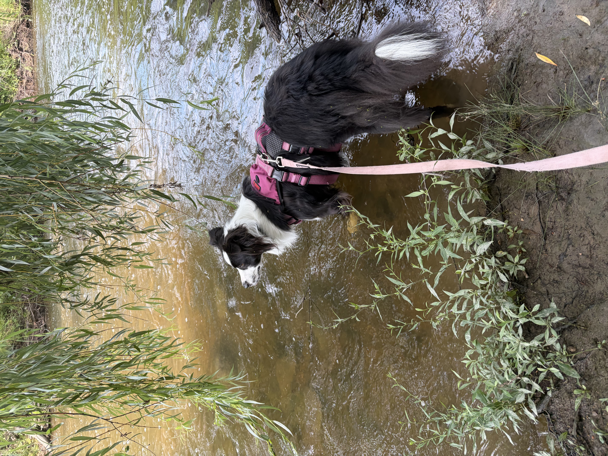

Exercise Needs
In this section, I will talk about how much exercise an Australian Shepherd needs.
Mental Stimulation
Here I will talk about the amount of mental stimulation an Australian Shepherd needs and ways to achieve this.
Most Important Training Exercises
- Socialization and Exposure Training
- Basic Commands and Attention Training
- Impulse Control Training
- Recall Training
- Advanced Training (Problem-Solving, Scent Work, Agility)
Game Ideas
- Interactive Puzzles
- Scent Work Games
- Hide and Seek
- Frisbee/Fetch
- Tug of War
Fur Maintenance
Here I will talk about how to maintain an Australian Shepherd's coat.